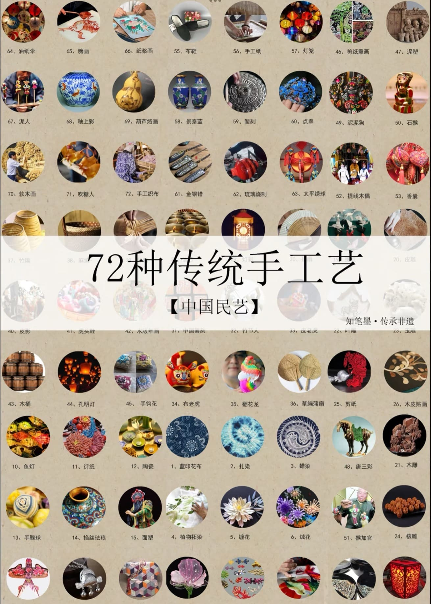

- 你想买工艺品吗？
- 本项目由：
- ---------------------------
- 陈灿鑫、宋蕊、吴晴芳
- ---------------------------
- 历时n多个小时和心血
- 无数个日日☀夜夜🌙
- 精心策划❤
- 只为精彩演出！！！
- 由“我不想做淘宝客服队”搭建的平台
- 为您倾心奉献~
- 希望您能喜欢~
关于艺创 E 家
在时光的长河中，传统手工艺如同一颗颗明珠，散发着民族文化的璀璨光辉。然而，面对工业化浪潮的冲击和现代生活节奏的加快，传统手工艺陷入了传承之困、创新之难、市场之窄的泥沼。为打破这一僵局，“艺创 E 家：传统手工艺个性化定制平台” 应势而生，立志成为传统手工艺在新时代的破局者与领航者。
“艺创 E 家” 以创新为驱动，以互联网为羽翼，搭建起一个连接手工艺人与消费者的便捷桥梁。在这里，汇聚了全国各地区、各品类的顶尖手工艺人，编织艺术的细腻、金属工艺的精湛、织染刺绣的绚丽、陶瓷工艺的古朴、雕刻艺术的深邃、工艺画的灵动等一一呈现。每一件手工艺品都是手工技艺与文化内涵的完美融合，它们承载着岁月的记忆，诉说着古老的故事。

艺创 E 家作为传统手工艺个性化定制平台，致力于打破传统手工艺发展的局限。一方面，专注于个性化定制服务，消费者能够深度参与创作，将个人创意融入设计，定制特殊图案、主题及材料工艺，无论是独特首饰、专属家居装饰品，还是纪念礼品、个性艺术品，均能在此实现，每一件定制作品都独具个性，充分彰显消费者品味。另一方面，平台全力打造多元化交流社区，手工艺人在此分享创作心得、展示新作、交流技艺创新，消费者可深入了解手工艺品文化故事与制作工艺，并与手工艺人直接互动，提出想法建议，这里不仅是便捷的交易场所，更是文化交融与创意迸发的舞台，推动传统手工艺在新时代焕发出新的活力与魅力。
“艺创 E 家：传统手工艺个性化定制平台” 将以传承为使命，以创新为动力，以定制为特色，让传统手工艺在新时代重新焕发生机与活力。我们相信，每一个创意都值得尊重，每一件手工艺品都蕴含无限可能。在艺创 E 家，传统手工艺将不再是束之高阁的艺术珍品，而是融入生活、展现个性的时尚之选。让我们携手共进，在传统与现代之间开辟出一条新的艺术之路，共同见证传统手工艺的华丽转身与蓬勃发展。